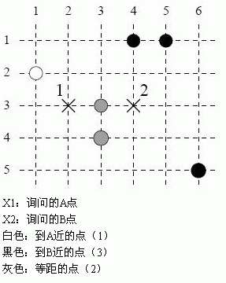

平面上有z个点，给你p个形如 p1(x1,y1),p2(x2,y2) 的询问，要你求出z个点中离p1更近的点，离p2更近的点，与p1和p2的距离相等的点各有多少个。这里的距离指的是曼哈顿距离，即x坐标之差的绝对值加上y坐标之差的绝对值。
| F.A.Qs | Home | Discuss | ProblemSet | Status | Ranklist | Contest | 入门OJ | ModifyUser Xeonacid | Logout | 捐赠本站 |
|---|
| F.A.Qs | Home | Discuss | ProblemSet | Status | Ranklist | Contest | 入门OJ | ModifyUser Xeonacid | Logout | 捐赠本站 |
|---|
平面上有z个点，给你p个形如 p1(x1,y1),p2(x2,y2) 的询问，要你求出z个点中离p1更近的点，离p2更近的点，与p1和p2的距离相等的点各有多少个。这里的距离指的是曼哈顿距离，即x坐标之差的绝对值加上y坐标之差的绝对值。
第一行n,m,z,p。下述所有坐标均满足1<=x<=n,1<=y<=m。接下来z行，每行xi,yi表示第i个点的坐标。接下来p行，每行x1,y1,x2,y2描述p1与p2的坐标。 1<=n,m<=10^9 1<=z,p<=100000 (x1,y1)<>(x2,y2)
p行，每行三个数依次表示离p1更近的点，离p2更近的点，与p1和p2距离相等的点的个数。

感谢MT大牛贡献译文.